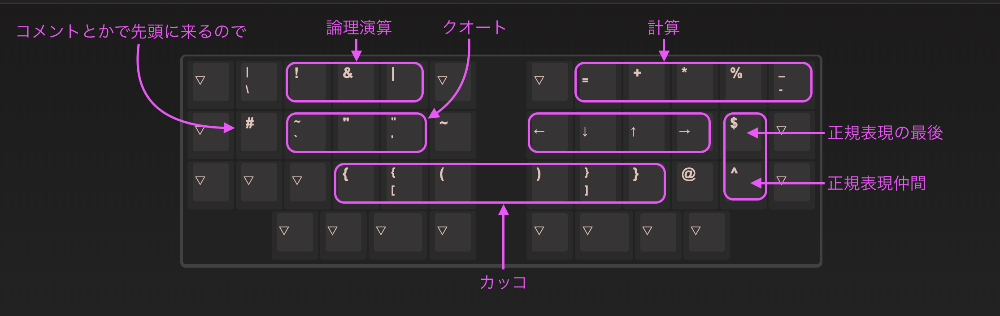

VIAでClaw44でキーマップの構築してみる
VIAを前提としているので、VIA対応がまだの方は、VIAでキーマップを変更するをご覧になってください。
最初に
- デフォルトのキーマップとはちょっと違う感じで作っていこうと思います（より筆者好みな感じにしています）
- まずはフラットな所から考えていきたいので、アルファベット部分以外を消します
LAYER 0はQWERTYという一般的なキーボードと同じ配置にします- 画像のように外側のキーはBASICにある空のキーを入れます
LAYER 1,2,3はひとまずBASICにある▽を入れておきます
レイヤー機能
- まずはレイヤー機能を体験してみましょう
VIA
- 左側の
LAYERSを選択して、図のようにMO(1)、MO(2)を設定します LAYERの 1をクリックして、LAYER 1の設定をします。- 数字を横一列に並べます。一般的なキーボードの上部のキーを持ってくる感じです。
入力してみる
- MO(1)を設定したキーを押しながら、他のキーを押してみてください
LAYER 1の数字設定した部分は数字が入力されるはずです- その他の
▽を設定したキーを押すと、LAYER 0のキーが入力されるはずです- ▽を設定すると透過する状態になる、ということです
- このようにレイヤー機能を利用すると、少ないキー数でも多くのキーを入力することができます
- レイヤーの利点
- でも、1つ押すだけで出来ていた事が、2つ動作が必要になるので大変になるのでは？と思うかもしれません
- ここで注目したいのが、一般的なキーボードの数字キーが遠いということです
- 試してみるとわかると思いますが、指をすごい伸ばしていたり、手自体を浮かせて移動させていると思います
- この動作と、レイヤーを使った動作でどちらが楽か？というのは自分に合ったキーボードを選ぶ基準の一つになると思います
- 自分はこのように親指でレイヤーを変えるスタイルの方が体の負担が少ないと考えるので、数字行のないキーボードを使っています
- 一般的なキーボードでもShiftやFnを使うことでキーの入力を変えているので、それが2,3増える代わりに指の移動距離が短くなると考えています
タップ・ホールド機能
- レイヤーの利点がわかっていただけたでしょうか
- しかしながら、レイヤーの切り替えは確かにコストがかかります
- 何も切り替えない
LAYER 0がやはり一等地になります - この一等地をフルに活用するように変更していきましょう
- 先ほどの
MO()だとレイヤー切り替えだけで1つのキーを使ってしまっています - ここにキー入力の機能を加えてみましょう
VIA
- 左側から
LAYERSをクリック - 先ほど
MO(0)だった位置に、Space Fn1を設定します
入力してみる
- この設定をすると、タップ（短く押した時）では
Spaceが入力され、ホールド（長く押している時）ではLAYER 1へ移動します - このタップ・ホールド機能を使うことで、
LAYER 0という一等地をより活用することができます
Anyキー
- 他のキーも設定していきましょう
- 先ほどの
MO(2)にEnterキーを組み込んでみましょう - しかし、
Enter Fn2というボタンは用意されていません Space Fn1はよく使うのでボタンが用意されているのですが、ボタンがない機能はAnyキーで設定してあげなくてはいけません
VIA
- その前に、
LAYER 2には何も設定していなかったので、カーソル移動できるように矢印キーを入れてみましょう LAYER 0に戻り、SPECIALを選択してMO(2)のキーにAnyキーを設定してください- こんなダイアログが表示されるので、
LT(2, KC_ENT)と入力してください - このように表示が変わるはずです
入力してみる
LT(2, KC_ENT)はホールドした時はLAYER 2へ移動、タップした時はEnterを入力する、という機能になります- 打ち間違えるとエラーとなり何も設定されないので注意してください
KC_ENTというのは、QMKで使用するキーコードになります- Enter以外を設定する場合は、こちらから参照してください。
- これで、
LT(2, KC_ENT)をホールドした時は、HJKLのキーを押す事でカーソル移動ができるはずです
Modifierキー
- 一等地である
LAYER 0に優先度の高いキーを埋めていきましょう Space、Enterはもう埋めたのでよし- 親指のホームポジションには
Space、Enter、Backspaceなど、一般的によく使われるキーが割り当てられる事が多いです - 左右のどちらにどれを置くかも、用途や好みによって変わるので色々と試してみてください
- 親指のホームポジションには
- あと必要になる筆頭はmodifierキーでしょうか（自分はMacなのでCommandを入れています）
- Shift
- Command
- Control
- Alt
- 自分の場合は、この辺りをよく使うので設定していきます
- ESC
- Tab
- Backspace
- Delete
- 英語入力 / 日本語入力
-
VIA
- 今回はこんな感じに設定してみました。（ホールド / タップ）な感じです。
- レイヤーキー同様に、modifilerキーもタップ・ホールド機能を使うことができます
- Anyキーで↓のような設定をしています（左回り）
- Command / Tab
MT(MOD_LGUI, KC_TAB))
- Alt / Delete
MT(MOD_LALT, KC_DEL))
- Shift / 英語入力
MT(MOD_LSFT, KC_HANJ))
- Control / Backspace
MT(MOD_LCTL, KC_BSPC))
- Shift / 日本語入力
MT(MOD_LSFT, KC_HAEN))
- Alt / Delete
MT(MOD_LALT, KC_DEL))
- Command / ESC
MT(MOD_LGUI, KC_ESC))
- Command / Tab
- 一番外側の下段は押しにくい位置で、普段はあまり使わないので左右のキーを入れています
- （電子書籍を読む時とかに使う）
- modifierの位置は何度となく変えて実験しているのですが、こんな事を考えて配置しています。
- Command
- コピペをはじめ、よく使うので真横に置いておきたい
- Shift
- 大文字を連続で打つなど押しっぱなしにすることがあるので、小指だとちょっとつらい
- 親指で押しながら自由にアルファベットに指がいくようにしている
- Control
- まあまあ使うけど、単発で使うことが多いので親指島の一番内側へ
- （連続で使うとちょっと辛いがControlくらいだったら大丈夫という判断）
- まあまあ使うけど、単発で使うことが多いので親指島の一番内側へ
- Alt
- そんなに使わないので親指島の一番外側へ
- Command
数字レイヤー
- さて、まだまだキーは足りないので追加していきましょう
- レイヤーはキーボードをどのように使っているかで分けると良いと思います
- 自分は数式など入力する事が多いので、数字レイヤーを作ってみます
VIA
- 計算に必要そうな記号を埋めていきます
- 下段のカンマ、ドット、スラッシュは▽でも良いのですが、他のキーを設定してしまわないように明示的に設定してあります
- この3キーが右手にあるので、逆側の左手に
LAYER 1への切り替えキー（Space Fn1）を入れて負荷分散しています - そのため、他の
+*%-も右側の上に詰めていきます- （
%はBASICの5ではなく、SPECIALの中にあるので注意してください）
- （
- マイナスはよく使うので、
LAYER 0に合わせています（並び的にはいまいちですが）
記号レイヤー
- 残りの記号を記号レイヤーに埋めていきます
- 先ほど設定したように、HJKLは矢印キーを使います（諸事情により）
VIA
- 使用頻度を考慮しつつ、覚えやすくするためにある程度グルーピングしてあります 
その他のレイヤー
- 自分が使うキーを入れてみましたが、ファンクションキーなどが入っていなかったりします
- 各レイヤーの余りや
LAYER 3を使って新しいレイヤーを設定してみたりしてください
まとめ
以上になります。
他にも機能はありますので、色々と試してみてください。
VIAファイル
- 今回設定したファイルを置いておきました
余談
- 筆者が今使っているキーマップはこんな感じです
- 今回のキーマップとの修正点を書いておきました
- 設定ファイル
- ファームウェア
- hexファイル(claw44_rev1_yfuku.hex)
- ファームの変更点
config.h
----------
#define TAPPING_TERM 180
#define IGNORE_MOD_TAP_INTERRUPT
#define TAPPING_TERM_PER_KEY
keymap.c
----------
// S,L,D,Kはちょっと余裕を持って。
#define TAPPING_LAYER_TERM 230
uint16_t get_tapping_term(uint16_t keycode, keyrecord_t *record) {
switch (keycode) {
case KC_GS_S:
return TAPPING_LAYER_TERM;
case KC_GS_L:
return TAPPING_LAYER_TERM;
case KC_A_D:
return TAPPING_LAYER_TERM;
case KC_A_K:
return TAPPING_LAYER_TERM;
default:
return TAPPING_TERM;
}
}
最終更新 January 1, 0001